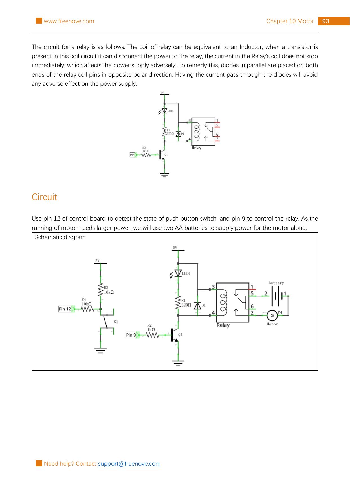

Use Arduino pin 12 as a button input and pin 9 as a relay-control output. Each deliberate press changes whether the relay connects a two-AA-battery motor circuit.
Gather the parts
Uno-compatible board and USB cable
Breadboard
5 V relay, NPN transistor, and diode from the matching Freenove kit
Small DC motor and a two-AA battery holder with two AA batteries
1 push button and 1 LED
Two 10 kΩ resistors, one 1 kΩ resistor, and one 220 Ω resistor
8 male-to-male jumper wires
Safety boundary: the referenced project uses the board’s 5 V control circuit and a separate two-AA-battery motor supply; never connect this project to AC mains, a wall outlet, house wiring, a power strip, or an unknown/high-voltage load. Do not use a relay as a first experiment with mains electricity. Remove USB and the AA batteries before moving wires; keep fingers, hair, and loose items away from the motor shaft; stop if anything becomes hot, smells odd, or behaves unexpectedly.
Build it, one check at a time
Step 1 — Study the reference circuit
Keep USB and the AA batteries disconnected. This is Freenove Project 10.1: a bare 5 V relay is driven through an NPN transistor, while the relay contacts switch a separate two-AA-battery motor path. It is not a three-pin relay module; follow this exact source page rather than substituting a similar-looking relay or module.

Reference image: Freenove Ultimate Starter Kit, Tutorial.pdf, Chapter 10, Project 10.1, printed page 93 / PDF page 97. Rasterized unchanged from the permitted source pack under CC BY-NC-SA 3.0; the public tutorial and licence source are linked in Reference pages.
Step 2 — Make the button input
Copy the left side of the source circuit exactly. Arduino pin 12 reaches the button node through R4, 10 kΩ. That node also connects through R3, 10 kΩ to 5 V, and the push button connects the node to GND when pressed. This makes the normal reading HIGH and a pressed reading LOW. Do not leave the input floating or replace the two resistors with a guess.
Use the source image to identify the button’s paired legs before inserting it. A button rotated by 90 degrees can connect the wrong pair of breadboard rows.
Step 3 — Build the relay driver, not a direct pin connection
Copy the center of the source circuit: Arduino pin 9 → R2, 1 kΩ → Q1 base; Q1’s emitter goes to GND. The relay coil is on the 5 V side of this transistor switch. The source also places D1 across the coil as a flyback diode, and LED1 with R1, 220 Ω as an indicator path. Keep the diode direction exactly as shown in the source diagram.
Never put the relay coil directly on pin 9. The transistor and diode are required parts of this particular circuit. If your relay pin layout or diode marking differs from the source image, stop and consult that exact part’s documentation before powering it.
Step 4 — Keep the motor circuit separate and low voltage
With the AA holder still empty, copy the right side of the source diagram: the relay contacts complete the loop between the two-AA-battery holder and the small DC motor. The motor supply is separate from the Arduino USB supply. Put in only two AA cells, with their polarity matching the battery-holder markings and the source diagram.
Do not connect the battery holder, motor, or relay contacts to any AC wiring. Do not touch or restrain the spinning shaft. If the motor does not match the small low-voltage kit motor, do not assume its voltage or current rating: use a matching low-voltage part only.
Step 5 — Upload the press-to-toggle sketch
Reconnect USB, select your Uno-compatible board and port, and upload this original sketch. It retains the source-validated pin assignments and 10 ms stable-time check. It changes relayState only on a stable LOW press, so holding the button should not keep flipping the relay. The relay begins off.
What you should see: one press changes the relay state; the indicator and small motor change state with it. A click alone is not a reason to touch the circuit. If it does not work, disconnect USB and remove the AA batteries first, then compare every component, diode direction, relay terminal, and button leg against the source diagram. Do not troubleshoot by trying AC power.
Tiny challenge
Before changing code, predict what happens if you change > 10 to > 30. Test it only with the same low-voltage circuit. Does a longer stable-time check make a very quick press easier or harder to detect? Put the value back to 10 when you finish.
The unchanged reference image and upstream material are from Freenove’s Ultimate Starter Kit and are used under CC BY-NC-SA 3.0. Attribution, noncommercial, and ShareAlike requirements apply. The learner-facing instructions and adapted, clearly named sketch are original.